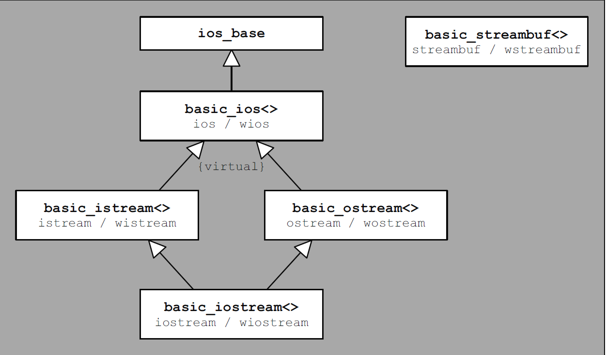

<!DOCTYPE html>
<html lang="zh">
<head><meta name="generator" content="Hexo 3.8.0">
    <meta charset="utf-8">
    
    <title>cpp缓冲与流对象 | QK</title>
    
    
        <meta name="keywords" content="cpp缓冲与流对象">
    
    <meta name="viewport" content="width=device-width, initial-scale=1, maximum-scale=1">
    <meta name="description" content="如上图就是cpp 流的结构~ ios_base : 定义了所有流独立于字符类型和字符特征的共有的属性，这个类由流状态函数/流格式标记函数组成 basic_ios&amp;lt;&amp;gt; :定了所有流共有的属性但是依赖于字符类型和字符特征，这个属性包含了使用了派生自basic_streambuf&amp;lt;&amp;gt;的流缓冲区，这个缓冲区执行确切的读写能力。 basic_istream&amp;lt;&amp;gt; &amp;amp;">
<meta property="og:type" content="article">
<meta property="og:title" content="cpp缓冲与流对象">
<meta property="og:url" content="http://yoursite.com/2019/03/04/cpp缓冲与流对象/index.html">
<meta property="og:site_name" content="QK">
<meta property="og:description" content="如上图就是cpp 流的结构~ ios_base : 定义了所有流独立于字符类型和字符特征的共有的属性，这个类由流状态函数/流格式标记函数组成 basic_ios&amp;lt;&amp;gt; :定了所有流共有的属性但是依赖于字符类型和字符特征，这个属性包含了使用了派生自basic_streambuf&amp;lt;&amp;gt;的流缓冲区，这个缓冲区执行确切的读写能力。 basic_istream&amp;lt;&amp;gt; &amp;amp;">
<meta property="og:locale" content="zh-CN">
<meta property="og:image" content="http://yoursite.com/2019/03/04/cpp缓冲与流对象/iosArchitect.png">
<meta property="og:image" content="http://yoursite.com/2019/03/04/cpp缓冲与流对象/fileArchi.png">
<meta property="og:image" content="http://yoursite.com/2019/03/04/cpp缓冲与流对象/stringArchi.png">
<meta property="og:updated_time" content="2019-03-26T13:44:55.069Z">
<meta name="twitter:card" content="summary">
<meta name="twitter:title" content="cpp缓冲与流对象">
<meta name="twitter:description" content="如上图就是cpp 流的结构~ ios_base : 定义了所有流独立于字符类型和字符特征的共有的属性，这个类由流状态函数/流格式标记函数组成 basic_ios&amp;lt;&amp;gt; :定了所有流共有的属性但是依赖于字符类型和字符特征，这个属性包含了使用了派生自basic_streambuf&amp;lt;&amp;gt;的流缓冲区，这个缓冲区执行确切的读写能力。 basic_istream&amp;lt;&amp;gt; &amp;amp;">
<meta name="twitter:image" content="http://yoursite.com/2019/03/04/cpp缓冲与流对象/iosArchitect.png">
    

    

    
        <link rel="icon" href="../../../../favicon.ico">
    

    <link rel="stylesheet" href="../../../../libs/font-awesome/css/font-awesome.min.css">
    <link rel="stylesheet" href="../../../../libs/open-sans/styles.css">
    <link rel="stylesheet" href="../../../../libs/source-code-pro/styles.css">

    <link rel="stylesheet" href="../../../../css/style.css">
    <script src="../../../../libs/jquery/2.1.3/jquery.min.js"></script>
    <script src="../../../../libs/jquery/plugins/cookie/1.4.1/jquery.cookie.js"></script>
    
    
        <link rel="stylesheet" href="../../../../libs/lightgallery/css/lightgallery.min.css">
    
    
        <link rel="stylesheet" href="../../../../libs/justified-gallery/justifiedGallery.min.css">
    
    
    
    


    
</head>
</html>
<body>
    <div id="container">
        <header id="header">
    <div id="header-main" class="header-inner">
        <div class="outer">
            <a href="../../../../index.html" id="logo">
                <i class="logo"></i>
                <span class="site-title">QK</span>
            </a>
            <nav id="main-nav">
                
                    <a class="main-nav-link" href="../../../../index.html">首页</a>
                
                    <a class="main-nav-link" href="../../../../about">关于</a>
                
            </nav>
            
            <div id="search-form-wrap">

    <form class="search-form">
        <input type="text" class="ins-search-input search-form-input" placeholder="搜索">
        <button type="submit" class="search-form-submit"></button>
    </form>
    <div class="ins-search">
    <div class="ins-search-mask"></div>
    <div class="ins-search-container">
        <div class="ins-input-wrapper">
            <input type="text" class="ins-search-input" placeholder="想要查找什么...">
            <span class="ins-close ins-selectable"><i class="fa fa-times-circle"></i></span>
        </div>
        <div class="ins-section-wrapper">
            <div class="ins-section-container"></div>
        </div>
    </div>
</div>
<script>
(function (window) {
    var INSIGHT_CONFIG = {
        TRANSLATION: {
            POSTS: '文章',
            PAGES: '页面',
            CATEGORIES: '分类',
            TAGS: '标签',
            UNTITLED: '(未命名)',
        },
        ROOT_URL: '/',
        CONTENT_URL: '../../../../content.json',
    };
    window.INSIGHT_CONFIG = INSIGHT_CONFIG;
})(window);
</script>
<script src="../../../../js/insight.js"></script>

</div>
        </div>
    </div>
    <div id="main-nav-mobile" class="header-sub header-inner">
        <table class="menu outer">
            <tr>
                
                    <td><a class="main-nav-link" href="../../../../index.html">首页</a></td>
                
                    <td><a class="main-nav-link" href="../../../../about">关于</a></td>
                
                <td>
                    
    <div class="search-form">
        <input type="text" class="ins-search-input search-form-input" placeholder="搜索">
    </div>

                </td>
            </tr>
        </table>
    </div>
</header>

        <div class="outer">
            
            
                <aside id="sidebar">
   
        
    <div class="widget-wrap" id="categories">
        <h3 class="widget-title">
            <span>分类</span>
            &nbsp;
            <a id="allExpand" href="#">
                <i class="fa fa-angle-double-down fa-2x"></i>
            </a>
        </h3>
        
        
        
         <ul class="unstyled" id="tree"> 
                    <li class="directory">
                        <a href="#" data-role="directory">
                            <i class="fa fa-folder"></i>
                            &nbsp;
                            Leetcode
                        </a>
                         <ul class="unstyled" id="tree">  <li class="file"><a href="../../../../2018/12/10/task-shchedule-weight/">求二叉树的路径和(path sum)</a></li>  </ul> 
                    </li> 
                    
                    <li class="directory">
                        <a href="#" data-role="directory">
                            <i class="fa fa-folder"></i>
                            &nbsp;
                            个人生活
                        </a>
                         <ul class="unstyled" id="tree">  <li class="file"><a href="../../../02/25/life-record2/">生活小记2</a></li>  <li class="file"><a href="../../../02/16/life_record1/">生活小记</a></li>  </ul> 
                    </li> 
                    
                    <li class="directory">
                        <a href="#" data-role="directory">
                            <i class="fa fa-folder"></i>
                            &nbsp;
                            工具
                        </a>
                         <ul class="unstyled" id="tree">  <li class="file"><a href="../../18/工具screen/">screen</a></li>  <li class="file"><a href="../../26/git简单使用/">git简单使用</a></li>  </ul> 
                    </li> 
                    
                    <li class="directory open">
                        <a href="#" data-role="directory">
                            <i class="fa fa-folder-open"></i>
                            &nbsp;
                            编程
                        </a>
                         <ul class="unstyled" id="tree"> 
                    <li class="directory open">
                        <a href="#" data-role="directory">
                            <i class="fa fa-folder-open"></i>
                            &nbsp;
                            cpp
                        </a>
                         <ul class="unstyled" id="tree"> 
                    <li class="directory">
                        <a href="#" data-role="directory">
                            <i class="fa fa-folder"></i>
                            &nbsp;
                            DLL交互
                        </a>
                         <ul class="unstyled" id="tree">  <li class="file"><a href="../../25/c-加载cppdll/">c#加载cppdll</a></li>  <li class="file"><a href="../../../../2018/12/05/android-NDK/">android NDK</a></li>  </ul> 
                    </li> 
                    
                    <li class="directory open">
                        <a href="#" data-role="directory">
                            <i class="fa fa-folder-open"></i>
                            &nbsp;
                            STL(类对象)
                        </a>
                         <ul class="unstyled" id="tree">  <li class="file active"><a href="">cpp缓冲与流对象</a></li>  </ul> 
                    </li> 
                    
                    <li class="directory">
                        <a href="#" data-role="directory">
                            <i class="fa fa-folder"></i>
                            &nbsp;
                            元编程
                        </a>
                         <ul class="unstyled" id="tree">  <li class="file"><a href="../../26/cpp特化/">cpp SFINAE</a></li>  </ul> 
                    </li> 
                    
                    <li class="directory">
                        <a href="#" data-role="directory">
                            <i class="fa fa-folder"></i>
                            &nbsp;
                            多线程
                        </a>
                         <ul class="unstyled" id="tree">  <li class="file"><a href="../../05/cpp11线程/">cpp11线程</a></li>  </ul> 
                    </li> 
                    
                    <li class="directory">
                        <a href="#" data-role="directory">
                            <i class="fa fa-folder"></i>
                            &nbsp;
                            算法
                        </a>
                         <ul class="unstyled" id="tree">  <li class="file"><a href="../../12/CPPTopologicOrder/">拓扑排序</a></li>  </ul> 
                    </li> 
                     </ul> 
                    </li> 
                    
                    <li class="directory">
                        <a href="#" data-role="directory">
                            <i class="fa fa-folder"></i>
                            &nbsp;
                            go
                        </a>
                         <ul class="unstyled" id="tree">  <li class="file"><a href="../../../02/22/GoTree/">数据类型<平衡树></平衡树></a></li>  <li class="file"><a href="../../../02/17/goGoroutine/">概述（2）</a></li>  <li class="file"><a href="../../01/goDataMap/">数据类型<map></map></a></li>  <li class="file"><a href="../../03/goWeb/">GoWeb <1></1></a></li>  <li class="file"><a href="../../../02/17/gonovice/">概述（1）</a></li>  <li class="file"><a href="../../01/goAndCpp/">数据类型 <数组&切片&结构体></数组&切片&结构体></a></li>  <li class="file"><a href="../../18/go接口小得/">接口interface 心得（1）</a></li>  </ul> 
                    </li> 
                    
                    <li class="directory">
                        <a href="#" data-role="directory">
                            <i class="fa fa-folder"></i>
                            &nbsp;
                            设计模式
                        </a>
                         <ul class="unstyled" id="tree">  <li class="file"><a href="../../18/设计模式/">设计模式</a></li>  </ul> 
                    </li> 
                     </ul> 
                    </li> 
                    
                    <li class="directory">
                        <a href="#" data-role="directory">
                            <i class="fa fa-folder"></i>
                            &nbsp;
                            计算机网络
                        </a>
                         <ul class="unstyled" id="tree">  <li class="file"><a href="../../../../2018/11/15/TCP-transport-institution/">TCP 传输机制</a></li>  <li class="file"><a href="../../../../2018/11/13/TCP-IP-demultipexing-multiplexing/">复路分解与多复路</a></li>  <li class="file"><a href="../../../../2018/12/09/router-data-plane/">路由器数据层</a></li>  </ul> 
                    </li> 
                     <li class="file"><a href="../../02/个人博客简介/">个人博客简介</a></li>  </ul> 
    </div>
    <script>
        $(document).ready(function() {
            var iconFolderOpenClass  = 'fa-folder-open';
            var iconFolderCloseClass = 'fa-folder';
            var iconAllExpandClass = 'fa-angle-double-down';
            var iconAllPackClass = 'fa-angle-double-up';
            // Handle directory-tree expansion:
            // 左键单独展开目录
            $(document).on('click', '#categories a[data-role="directory"]', function (event) {
                event.preventDefault();

                var icon = $(this).children('.fa');
                var expanded = icon.hasClass(iconFolderOpenClass);
                var subtree = $(this).siblings('ul');
                icon.removeClass(iconFolderOpenClass).removeClass(iconFolderCloseClass);
                if (expanded) {
                    if (typeof subtree != 'undefined') {
                        subtree.slideUp({ duration: 100 });
                    }
                    icon.addClass(iconFolderCloseClass);
                } else {
                    if (typeof subtree != 'undefined') {
                        subtree.slideDown({ duration: 100 });
                    }
                    icon.addClass(iconFolderOpenClass);
                }
            });
            // 右键展开下属所有目录
            $('#categories a[data-role="directory"]').bind("contextmenu", function(event){
                event.preventDefault();
                
                var icon = $(this).children('.fa');
                var expanded = icon.hasClass(iconFolderOpenClass);
                var listNode = $(this).siblings('ul');
                var subtrees = $.merge(listNode.find('li ul'), listNode);
                var icons = $.merge(listNode.find('.fa'), icon);
                icons.removeClass(iconFolderOpenClass).removeClass(iconFolderCloseClass);
                if(expanded) {
                    subtrees.slideUp({ duration: 100 });
                    icons.addClass(iconFolderCloseClass);
                } else {
                    subtrees.slideDown({ duration: 100 });
                    icons.addClass(iconFolderOpenClass);
                }
            })
            // 展开关闭所有目录按钮
            $(document).on('click', '#allExpand', function (event) {
                event.preventDefault();
                
                var icon = $(this).children('.fa');
                var expanded = icon.hasClass(iconAllExpandClass);
                icon.removeClass(iconAllExpandClass).removeClass(iconAllPackClass);
                if(expanded) {
                    $('#sidebar .fa.fa-folder').removeClass('fa-folder').addClass('fa-folder-open')
                    $('#categories li ul').slideDown({ duration: 100 });
                    icon.addClass(iconAllPackClass);
                } else {
                    $('#sidebar .fa.fa-folder-open').removeClass('fa-folder-open').addClass('fa-folder')
                    $('#categories li ul').slideUp({ duration: 100 });
                    icon.addClass(iconAllExpandClass);
                }
            });  
        });
    </script>

    
    <div id="toTop" class="fa fa-angle-up"></div>
</aside>
            
            <section id="main"><article id="post-cpp缓冲与流对象" class="article article-type-post" itemscope="" itemprop="blogPost">
    <div class="article-inner">
        
        
            <header class="article-header">
                
                    <div class="article-meta">
                        
    <div class="article-category">
    	<i class="fa fa-folder"></i>
        <a class="article-category-link" href="../../../../categories/编程/">编程</a><i class="fa fa-angle-right"></i><a class="article-category-link" href="../../../../categories/编程/cpp/">cpp</a><i class="fa fa-angle-right"></i><a class="article-category-link" href="../../../../categories/编程/cpp/STL-类对象/">STL(类对象)</a>
    </div>

                        
                        
    <div class="article-date">
        <i class="fa fa-calendar"></i>
        <a href="">
            <time datetime="2019-03-04T13:50:56.000Z" itemprop="datePublished">2019-03-04</time>
        </a>
    </div>


                        
                        
                    </div>
                
                
    
        <h1 class="article-title" itemprop="name">
            cpp缓冲与流对象
        </h1>
    

            </header>
        
        
        <div class="article-entry" itemprop="articleBody">
        
        
            
        
        
            <h2 id=""><a href="#" class="headerlink" title=""></a></h2><p>如上图就是cpp 流的结构~</p>
<p><strong>ios_base</strong> : 定义了所有流独立于字符类型和字符特征的共有的属性，这个类由流状态函数/流格式标记函数组成</p>
<p><strong>basic_ios&lt;&gt;</strong> :定了所有流共有的属性但是依赖于字符类型和字符特征，这个属性包含了使用了派生自basic_streambuf&lt;&gt;的流缓冲区，这个缓冲区执行确切的读写能力。</p>
<p><strong>basic_istream&lt;&gt; &amp;&amp; bacsic_ostream&lt;&gt;</strong>  : 虚继承了basic_ios&lt;&gt; ，分别用来读写</p>
<p><strong>basic_iostream&lt;&gt;</strong> : 派生自basic_istream&lt;&gt; &amp;&amp; bacsic_ostream&lt;&gt; 可以用来读和写</p>
<p><strong>basic_streambuf&lt;&gt;</strong> : 是iostream 库的核心，定了接口用来写向流和从流中读取字符，这些接口可以被其他流使用执行读写能力</p>
<h2 id="1-责任划分"><a href="#1-责任划分" class="headerlink" title="1. 责任划分"></a>1. 责任划分</h2><p>  派生自basic_ios只用来处理数据的格式、流的状态，而字符的读写被basic_streambuf&lt;&gt;执行，流缓冲区提供给其他流接口用来处理字符读写{socket、graphic、user interface component}</p>
<h2 id="2-流对象类别"><a href="#2-流对象类别" class="headerlink" title="2. 流对象类别"></a>2. 流对象类别</h2><ol>
<li>标准输入输出 :iostream 、istream 、ostream</li>
<li>文件流 : fstream</li>
<li>字符流 : stringstream</li>
</ol>
<h2 id="3-流的状态"><a href="#3-流的状态" class="headerlink" title="3. 流的状态"></a>3. 流的状态</h2><ol>
<li>goodbit: 一切都是正常的，没有任何bit位被设置</li>
<li>eofbit : 到达文件结尾</li>
<li>failbit: 发生错误，i/o操作不成功</li>
<li>badbit : 致命的错误，产生未定义状态</li>
</ol>
<p>对应的函数：good()、eof()、fail()、bad()、rdstate()、clear()、setstate()</p>
<h2 id="4-标准输入输出函数"><a href="#4-标准输入输出函数" class="headerlink" title="4. 标准输入输出函数"></a>4. 标准输入输出函数</h2><p>&lt;&lt; &amp;&amp; &gt;&gt;两个操作符是带有格式格式的输入输出方式，如果用户想用原生态数据（没有格式化），可以使用流的成员函数</p>
<h3 id="4-1-输入成员函数"><a href="#4-1-输入成员函数" class="headerlink" title="4.1 输入成员函数"></a>4.1 输入成员函数</h3><ol>
<li>get()</li>
<li>getline()</li>
<li>read()</li>
<li>readsome()</li>
</ol>
<h3 id="4-2-输出成员函数"><a href="#4-2-输出成员函数" class="headerlink" title="4.2 输出成员函数"></a>4.2 输出成员函数</h3><ol>
<li>put()</li>
<li>write()</li>
<li>flush()</li>
</ol>
<h3 id="4-3-流的辅助类-sentry"><a href="#4-3-流的辅助类-sentry" class="headerlink" title="4.3 流的辅助类 sentry"></a>4.3 流的辅助类 sentry</h3><p>辅助类形式<br><figure class="highlight c++"><table><tr><td class="gutter"><pre><span class="line">1</span><br><span class="line">2</span><br><span class="line">3</span><br><span class="line">4</span><br></pre></td><td class="code"><pre><span class="line"><span class="function">sentry <span class="title">se</span><span class="params">(strm)</span></span>; <span class="comment">// indirect pre- and postprocessing</span></span><br><span class="line"><span class="keyword">if</span> (se) &#123;</span><br><span class="line">... <span class="comment">// the actual processing</span></span><br><span class="line">&#125;</span><br></pre></td></tr></table></figure></p>
<p>哨兵类用来做流对象的预处理和后处理的工作~</p>
<p>这些操作包括：同步几个流，检查流是否正常，是否跳过空格，实现特定任务{多线程环境下，完成相应的锁定}</p>
<h3 id="4-4-流格式操作"><a href="#4-4-流格式操作" class="headerlink" title="4.4 流格式操作"></a>4.4 流格式操作</h3><p>头文件<br><figure class="highlight c++"><table><tr><td class="gutter"><pre><span class="line">1</span><br></pre></td><td class="code"><pre><span class="line"><span class="meta">#<span class="meta-keyword">include</span><span class="meta-string">&lt;iomanip&gt;</span></span></span><br></pre></td></tr></table></figure></p>
<p>而对应的format 在std::ios::XXX</p>
<h4 id="4-4-1-成员函数"><a href="#4-4-1-成员函数" class="headerlink" title="4.4.1 成员函数"></a>4.4.1 成员函数</h4><p>流对象中</p>
<ol>
<li>setf</li>
<li>unsetf</li>
<li>flag </li>
<li>copyfmt</li>
<li>imbue  //set local object [internationalization]</li>
<li>getloc  //get the local object [internationalization]</li>
</ol>
<h4 id="4-4-2全局函数"><a href="#4-4-2全局函数" class="headerlink" title="4.4.2全局函数"></a>4.4.2全局函数</h4><p>这些函数在iomanip头文件中</p>
<ol>
<li>setiosflags</li>
<li>resetiosflags</li>
<li>… </li>
</ol>
<h2 id="5-文件流"><a href="#5-文件流" class="headerlink" title="5. 文件流"></a>5. 文件流</h2><h2 id="-1"><a href="#-1" class="headerlink" title=""></a></h2><p>文件流派生自标准输入输出流，主要用于文件的读写</p>
<h3 id="5-1-文件打开标记"><a href="#5-1-文件打开标记" class="headerlink" title="5.1 文件打开标记"></a>5.1 文件打开标记</h3><ol>
<li>in</li>
<li>out</li>
<li>app<br>而这三者可以任意组合</li>
</ol>
<h3 id="5-2-文件随机处理指针"><a href="#5-2-文件随机处理指针" class="headerlink" title="5.2 文件随机处理指针"></a>5.2 文件随机处理指针</h3><p>输入流：</p>
<ol>
<li>tellg</li>
<li>seekg</li>
</ol>
<p>输出流：</p>
<ol>
<li>tellp</li>
<li>seekp</li>
</ol>
<h2 id="6-字符串流"><a href="#6-字符串流" class="headerlink" title="6. 字符串流"></a>6. 字符串流</h2><h2 id="-2"><a href="#-2" class="headerlink" title=""></a></h2><h3 id="6-1-成员函数"><a href="#6-1-成员函数" class="headerlink" title="6.1 成员函数"></a>6.1 成员函数</h3><p>输出流</p>
<ol>
<li>str() : 返回一个字符串</li>
<li>str(string) : 把string 设置成</li>
</ol>
<p>输入流：<br>“&gt;&gt;” 操作符，用来将缓冲区的数据输入到特定的类型</p>
<h2 id="7-输入流和输出流的连接"><a href="#7-输入流和输出流的连接" class="headerlink" title="7. 输入流和输出流的连接"></a>7. 输入流和输出流的连接</h2><p>通常而言，你需要连接两个流，比如可能需要确保在读取输入之前在屏幕上写入要求输入的文本，读写使用同一个流，操作相同的流使用不同的数据格式</p>
<h3 id="7-1-成员函数"><a href="#7-1-成员函数" class="headerlink" title="7.1 成员函数"></a>7.1 成员函数</h3><ol>
<li>tie() :返回一个已经绑定到流上的输出流指针</li>
<li>tie(ostream *strm) : 设置输出流对象，返回之前的流指针</li>
</ol>
<h3 id="7-2流缓冲区的绑定-释放"><a href="#7-2流缓冲区的绑定-释放" class="headerlink" title="7.2流缓冲区的绑定/释放"></a>7.2流缓冲区的绑定/释放</h3><ol>
<li>rdbuf() :返回流缓冲区的指针</li>
<li>rdbuf(streambuf* ) :设置流缓冲区，返回之前的缓冲区对象指针。</li>
</ol>
<p>利用流缓冲区的绑定和释放，我们可以实现重定向的作用<br><figure class="highlight c++"><table><tr><td class="gutter"><pre><span class="line">1</span><br><span class="line">2</span><br><span class="line">3</span><br><span class="line">4</span><br><span class="line">5</span><br><span class="line">6</span><br><span class="line">7</span><br><span class="line">8</span><br><span class="line">9</span><br><span class="line">10</span><br><span class="line">11</span><br><span class="line">12</span><br><span class="line">13</span><br><span class="line">14</span><br><span class="line">15</span><br><span class="line">16</span><br><span class="line">17</span><br><span class="line">18</span><br><span class="line">19</span><br><span class="line">20</span><br><span class="line">21</span><br><span class="line">22</span><br><span class="line">23</span><br><span class="line">24</span><br><span class="line">25</span><br><span class="line">26</span><br></pre></td><td class="code"><pre><span class="line"><span class="meta">#<span class="meta-keyword">include</span> <span class="meta-string">&lt;iostream&gt;</span></span></span><br><span class="line"><span class="meta">#<span class="meta-keyword">include</span> <span class="meta-string">&lt;fstream&gt;</span></span></span><br><span class="line"><span class="meta">#<span class="meta-keyword">include</span> <span class="meta-string">&lt;memory&gt;</span></span></span><br><span class="line"><span class="keyword">using</span> <span class="keyword">namespace</span> <span class="built_in">std</span>;</span><br><span class="line"><span class="function"><span class="keyword">void</span> <span class="title">redirect</span><span class="params">(ostream&amp;)</span></span>;</span><br><span class="line"><span class="function"><span class="keyword">int</span> <span class="title">main</span><span class="params">()</span></span></span><br><span class="line"><span class="function"></span>&#123;</span><br><span class="line">  <span class="built_in">cout</span> &lt;&lt; <span class="string">"the first row"</span> &lt;&lt; <span class="built_in">endl</span>;</span><br><span class="line">  redirect(<span class="built_in">cout</span>);</span><br><span class="line">  <span class="built_in">cout</span> &lt;&lt; <span class="string">"the last row"</span> &lt;&lt; <span class="built_in">endl</span>;</span><br><span class="line">&#125;</span><br><span class="line"><span class="function"><span class="keyword">void</span> <span class="title">redirect</span> <span class="params">(ostream&amp; strm)</span></span></span><br><span class="line"><span class="function"></span>&#123;</span><br><span class="line"><span class="comment">// save output buffer of the stream</span></span><br><span class="line"><span class="comment">// - use unique pointer with deleter that ensures to restore</span></span><br><span class="line"><span class="comment">// the original output buffer at the end of the function</span></span><br><span class="line">  <span class="keyword">auto</span> del = [&amp;](streambuf* p) &#123;</span><br><span class="line">  strm.rdbuf(p);</span><br><span class="line">  &#125;;</span><br><span class="line">  <span class="built_in">unique_ptr</span>&lt;streambuf,<span class="keyword">decltype</span>(del)&gt; origBuffer(strm.rdbuf(),del);</span><br><span class="line">  <span class="comment">// redirect ouput into the file redirect.txt</span></span><br><span class="line">  <span class="function">ofstream <span class="title">file</span><span class="params">(<span class="string">"redirect.txt"</span>)</span></span>;</span><br><span class="line">  strm.rdbuf (file.rdbuf());</span><br><span class="line">  file &lt;&lt; <span class="string">"one row for the file"</span> &lt;&lt; <span class="built_in">endl</span>;</span><br><span class="line">  strm &lt;&lt; <span class="string">"one row for the stream"</span> &lt;&lt; <span class="built_in">endl</span>;</span><br><span class="line">&#125; <span class="comment">// closes file AND its buffer automatically</span></span><br></pre></td></tr></table></figure></p>
<p>基本上基础关于流的基础知识也就是这么多~</p>
<p>对于流缓冲区的使用，用户自定义模式~，这一步，将单独写一篇博客用来描述</p>
<p>sleeping~</p>

            </div>
        
        <footer class="article-footer">
        </footer>
    </div>
</article>


    
<nav id="article-nav">
    
        <a href="../../05/cpp11线程/" id="article-nav-newer" class="article-nav-link-wrap">
            <strong class="article-nav-caption">上一篇</strong>
            <div class="article-nav-title">
                
                    cpp11线程
                
            </div>
        </a>
    
    
        <a href="../../03/goWeb/" id="article-nav-older" class="article-nav-link-wrap">
            <strong class="article-nav-caption">下一篇</strong>
            <div class="article-nav-title">GoWeb &lt;1&gt;</div>
        </a>
    
</nav>


    
    


<!-- baidu url auto push script -->
<script type="text/javascript">
    !function(){var e=/([http|https]:\/\/[a-zA-Z0-9\_\.]+\.baidu\.com)/gi,r=window.location.href,o=document.referrer;if(!e.test(r)){var n="//api.share.baidu.com/s.gif";o?(n+="?r="+encodeURIComponent(document.referrer),r&&(n+="&l="+r)):r&&(n+="?l="+r);var t=new Image;t.src=n}}(window);
</script>     
</section>
        </div>
        <footer id="footer">
    <div class="outer">
        <div id="footer-info" class="inner">
            lwb &copy; 2019 
            <a rel="license" href="http://creativecommons.org/licenses/by-nc-nd/4.0/"></a>
            <br> Powered by <a href="http://hexo.io/" target="_blank">Hexo</a>. Theme - <a href="https://github.com/zthxxx/hexo-theme-Wikitten">wikitten</a>
            
        </div>
    </div>
</footer>

        

    
        <script src="../../../../libs/lightgallery/js/lightgallery.min.js"></script>
        <script src="../../../../libs/lightgallery/js/lg-thumbnail.min.js"></script>
        <script src="../../../../libs/lightgallery/js/lg-pager.min.js"></script>
        <script src="../../../../libs/lightgallery/js/lg-autoplay.min.js"></script>
        <script src="../../../../libs/lightgallery/js/lg-fullscreen.min.js"></script>
        <script src="../../../../libs/lightgallery/js/lg-zoom.min.js"></script>
        <script src="../../../../libs/lightgallery/js/lg-hash.min.js"></script>
        <script src="../../../../libs/lightgallery/js/lg-share.min.js"></script>
        <script src="../../../../libs/lightgallery/js/lg-video.min.js"></script>
    
    
        <script src="../../../../libs/justified-gallery/jquery.justifiedGallery.min.js"></script>
    
    
        <script type="text/x-mathjax-config">
    MathJax.Hub.Config({
        tex2jax: {
            inlineMath: [ ["$","$"], ["\\(","\\)"] ],
            skipTags: ['script', 'noscript', 'style', 'textarea', 'pre', 'code'],
            processEscapes: true,
            TeX: {
                equationNumbers: {
                  autoNumber: 'AMS'
                }
            }
        }
    });
    MathJax.Hub.Queue(function() {
        var all = MathJax.Hub.getAllJax();
        for (var i = 0; i < all.length; ++i)
            all[i].SourceElement().parentNode.className += ' has-jax';
    });
</script>
<script async src="//cdnjs.cloudflare.com/ajax/libs/mathjax/2.7.1/MathJax.js?config=TeX-AMS-MML_HTMLorMML"></script>
    


<!-- Custom Scripts -->
<script src="../../../../js/main.js"></script>

    </div>
</body>
</html>